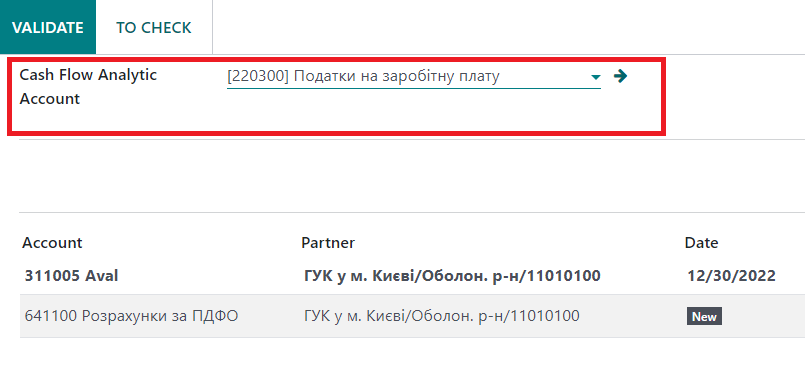
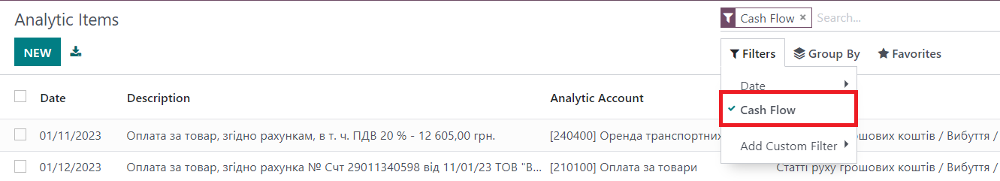
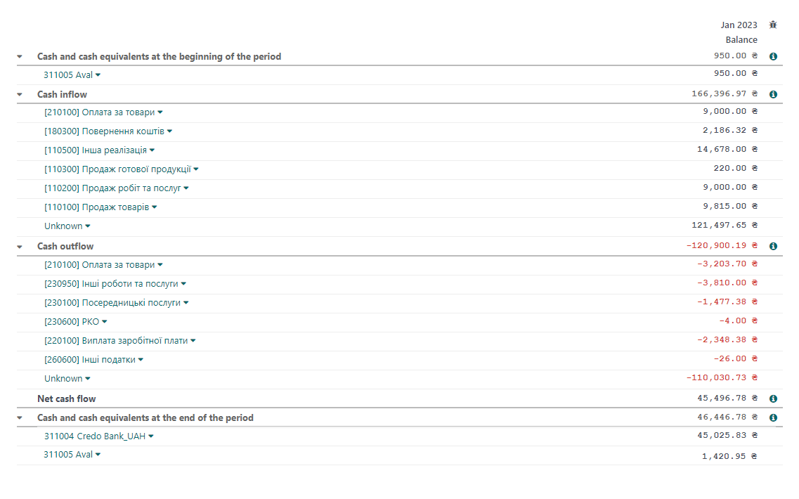

When posting a bank statement item, the user should specify the analytical account in the "Cash flow item" field. The analytical account will be used as an analytic for the bank and cash account (type "Bank and cash").

After the user clicks the "Validate" button, an accounting record is created in the system.
If there was a cash receipt, this record will have a "+" sign, if there was a write-off, it will have a "-" sign.
In order to analyze cash flows by item, the user needs to go to:
Accounting / Accounting / Analytic items
and apply the "Cash flow" filter

To generate a Cash Flow Statement with analytics by cash flow items, go to:
Accounting / Reporting / Cash Flow Analytic

For more detailed information on using this functionality, please refer to the Manual available for download at the following link.
COPY LINK
https://www.self-erp.com/self_erp_website/static/documents/selferp_cashflow_analytic.pdf
COPY LINK
https://www.self-erp.com/self_erp_website/static/documents/selferp_cashflow_analytic.pdf
https://www.self-erp.com/self_erp_website/static/documents/selferp_cashflow_analytic.pdf